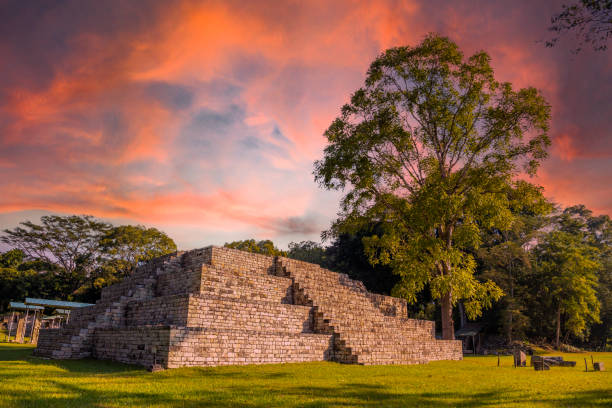

Actividades
-
Recorrer la Gran Plaza
La Gran Plaza es el corazón de Copán. Aquí se pueden admirar las famosas estelas mayas con tallados detallados de los gobernantes y sus hazañas. También se observan altares y estructuras ceremoniales que muestran cómo vivían y celebraban rituales los mayas.
-
Visitar la Escalinata Jeroglífica
Esta escalinata contiene el texto maya más largo conocido, con más de 2.000 glifos. Subirla permite apreciar de cerca los grabados y entender la importancia histórica de Copán, además de ofrecer una vista panorámica de la ciudad antigua.
-
Entrar al Museo de Escultura Maya
El museo muestra réplicas y originales de esculturas, altares y figuras mayas. Destaca la réplica del Templo Rosalila, un templo intacto que permite imaginar cómo eran las ceremonias religiosas en la época clásica.
-
Recorrer los templos y acrópolis
Explora templos menores y acrópolis que rodean la Gran Plaza. Cada estructura tiene su propia historia y función, y los visitantes pueden observar la arquitectura y los detalles artísticos de los mayas.
-
Caminar por los senderos arqueológicos
Alrededor de Copán hay senderos que conectan distintas estructuras y zonas arqueológicas. Son perfectos para pasear, tomar fotos y disfrutar del entorno natural mientras se aprende sobre la vida maya.